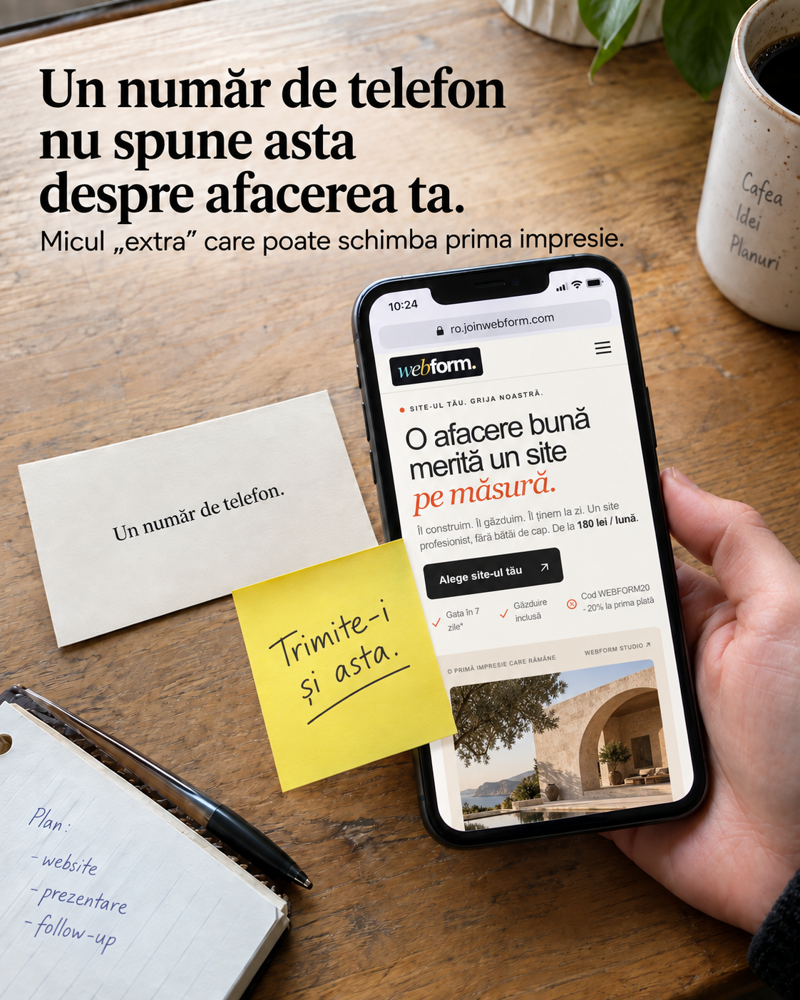
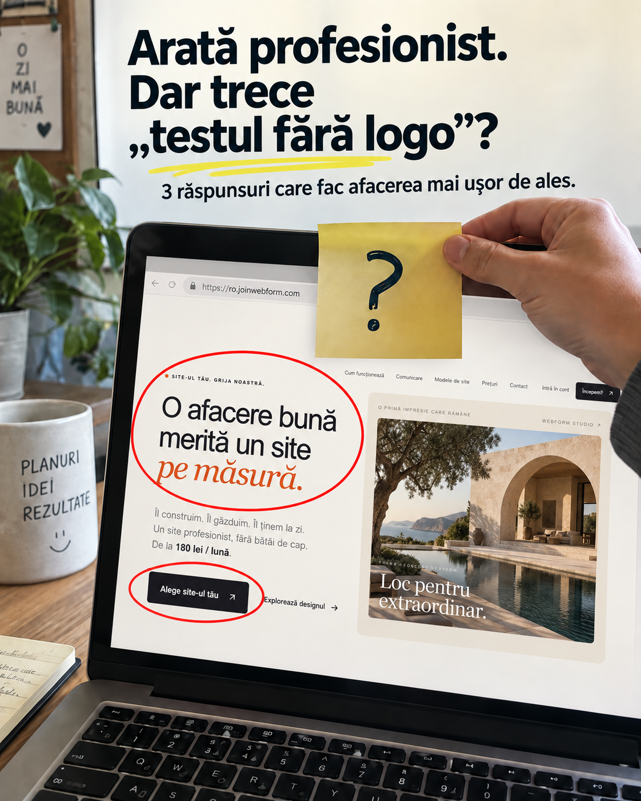
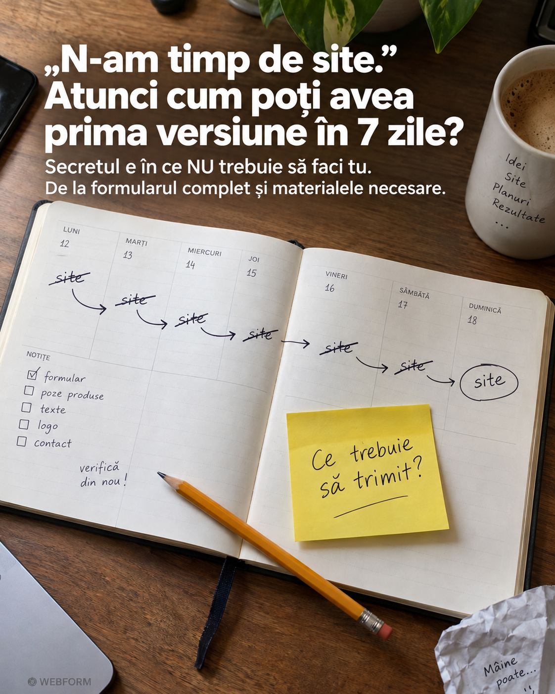
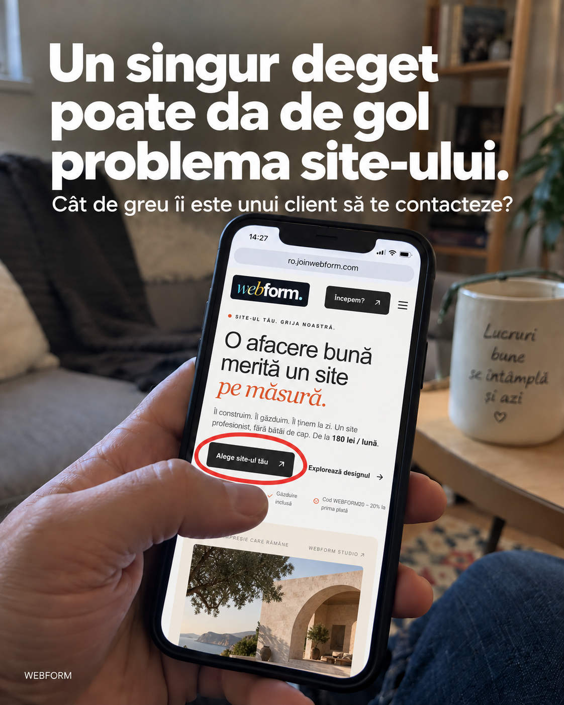
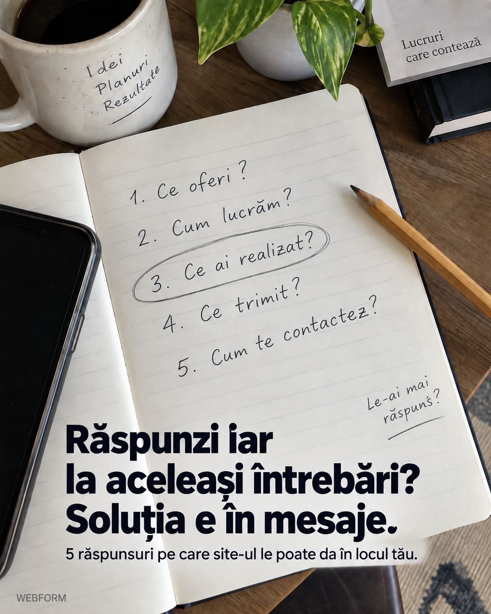
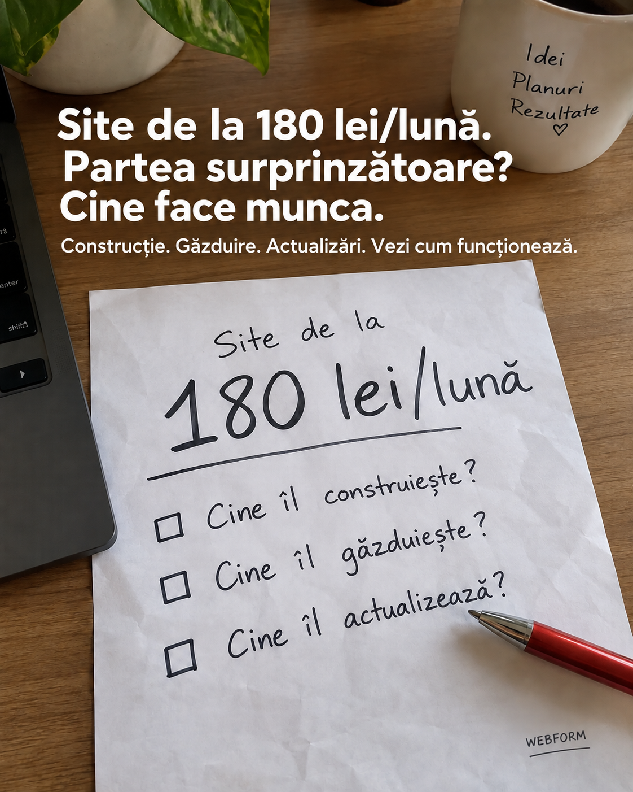
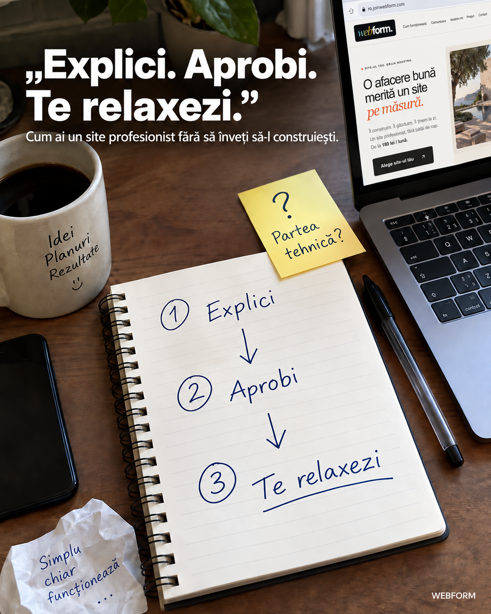
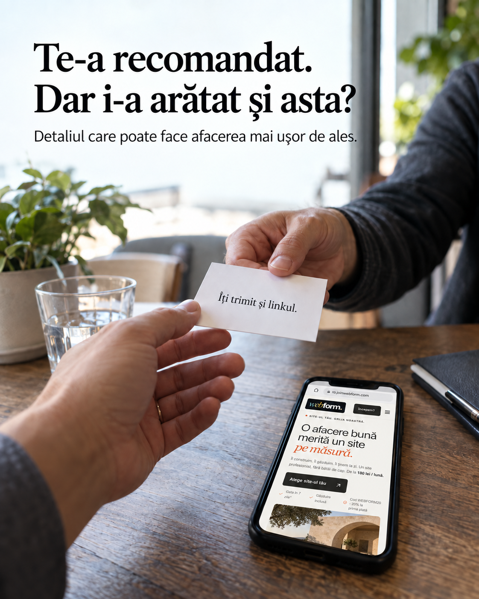
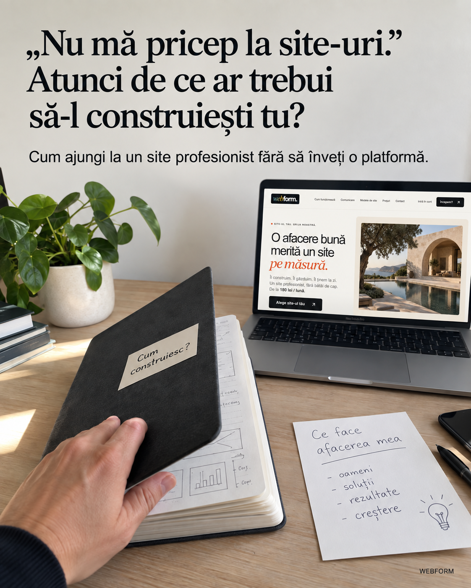
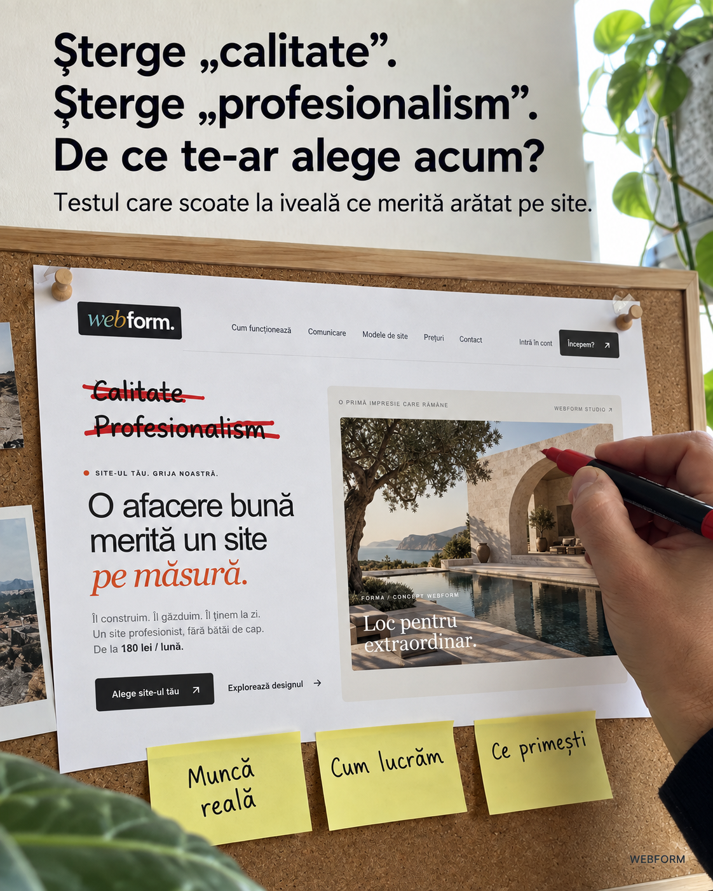

RECLAMA 1Descarcă imaginea PNG ↓Primary textCopiazăÎți trimit numărul. Dar mai e ceva ce merită să vezi înainte să suni. Un link în care omul găsește ce faci, lucrări din portofoliul tău și cum te poate contacta. Gândește-te la ultima dată când cineva ți-a cerut o recomandare. Cât de ușor ți-a fost să explici de ce merită ales omul respectiv? Un număr de telefon îi permite să sune. O prezentare clară îi dă și motive să o facă. Iată ce merită să poată vedea înainte de prima discuție: • Ce oferi, spus pe înțelesul lui. • Fotografii sau lucrări reale, relevante pentru ce caută. • Un pas simplu prin care să ajungă la tine. Toate pot sta pe un site pe care îl trimiți la fel de ușor ca un număr de telefon. Webform construiește și administrează acel site pentru afacerea ta. Tu trimiți informațiile și materialele; echipa se ocupă de structură, design și partea tehnică. Vezi cum poate arăta locul spre care să ducă următoarea recomandare.HeadlineCopiazăMicul „extra” care poate face o simplă recomandare mult mai convingătoare.DescriptionCopiazăCe merită trimis odată cu numărul.CTA: Află mai multeURL articol: https://ro.joinwebform.com/articole/recomandarea-care-convingeCitește articolul — previzualizare locală ↗
RECLAMA 2Descarcă imaginea PNG ↓Primary textCopiazăUn simplu bilețel peste logo poate scoate la iveală ce nu spune site-ul. Poți face testul chiar acum, de pe telefon. Lasă deoparte cât de frumoase sunt culorile. Caută trei răspunsuri: Ce pot cumpăra de aici? De ce mi s-ar potrivi? Cum cer mai multe detalii? Dacă trebuie să cauți prin mai multe pagini ca să le găsești, ai descoperit ceva ce merită schimbat. „Soluții complete” poate însemna aproape orice. O propoziție care spune concret ce faci îi dă vizitatorului un punct de pornire. O fotografie relevantă îi arată despre ce vorbești. Un buton clar îi spune ce poate face în continuare. Acesta este un mod util de a privi un site: prin întrebările persoanei care îl deschide pentru prima dată. La Webform, echipa propune structura și designul pornind de la informațiile despre afacerea ta. Inclusiv felul în care prezentarea se vede pe mobil. Explorează modelele de site și privește primul ecran cu cele trei întrebări în minte.HeadlineCopiazăArată profesionist. Dar trece „testul fără logo” care scoate la iveală ce înțelege un client?DescriptionCopiazăAcoperă logo-ul. Apoi uită-te din nou.CTA: Află mai multeURL articol: https://ro.joinwebform.com/articole/testul-fara-logoCitește articolul — previzualizare locală ↗
RECLAMA 3Descarcă imaginea PNG ↓Primary textCopiazăPartea care pare să ceară cel mai mult timp nici măcar nu trebuie făcută de tine. Pentru că „să-mi fac un site” ascunde o grămadă de alte lucruri. Să alegi un design. Să înțelegi platforma. Să așezi textele. Să verifici telefonul. Să afli unde se publică. Iată o împărțire mai simplă a proiectului. Partea ta: explici ce face afacerea, trimiți textele și imaginile necesare și spui ce vrei să găsească omul pe site. Partea echipei: transformă materialele într-o structură, într-un design și într-un site pe care îl poți verifica. Așa lucrează Webform. Prima versiune este gata în 7 zile de la primirea formularului complet și a materialelor necesare. Primești versiunea în chat, o verifici și trimiți observațiile înainte de publicare. Poți începe prin a vedea pașii. Devine mult mai ușor să hotărăști când pornești dacă știi exact ce ai de pregătit.HeadlineCopiazăDe la „n-am timp de site” la prima versiune în 7 zile. Secretul e în ce NU faci tu.DescriptionCopiazăDescoperă ce poți scoate de pe lista ta.CTA: Află mai multeURL articol: https://ro.joinwebform.com/articole/site-fara-sa-ti-ocupe-timpulCitește articolul — previzualizare locală ↗
RECLAMA 5Descarcă imaginea PNG ↓Primary textCopiazăSite-ul poate arăta impecabil și totuși să se împiedice exact aici. Încearcă asta. Fără să mărești textul. Fără să cauți numărul prin subsol. Fără să ghicești ce buton trebuie apăsat. Acum verifică trei lucruri: Poți citi ce oferă afacerea? Poți găsi informația care te interesează? Poți ajunge ușor la contact? Este un test simplu, dar te obligă să privești site-ul din locul omului care îl folosește. Pe laptop ai loc pentru toate. Pe telefon, fiecare rând și fiecare buton trebuie așezate cu grijă. Un site poate avea o imagine frumoasă și totuși să ceară prea mult efort pentru un lucru simplu: să afli dacă firma te poate ajuta. Webform include design optimizat pentru mobil și formular de contact, inclusiv în planul Start. Deschide modelele de site de pe telefon. Verifică traseul de la prima privire până la contact și vezi cum ai vrea să funcționeze pentru afacerea ta.HeadlineCopiazăUn singur deget poate da de gol problema dintre site-ul tău și următoarea cerere de contact.DescriptionCopiazăVerifică locul în care se poate bloca un client.CTA: Află mai multeURL articol: https://ro.joinwebform.com/articole/testul-unui-singur-degetCitește articolul — previzualizare locală ↗
RECLAMA 6Descarcă imaginea PNG ↓Primary textCopiazăAi scris deja o parte din viitorul site. Doar că ai trimis-o pe bucăți, în mesaje. Ce oferi exact? Cum se lucrează cu tine? Unde pot vedea ce ai realizat? Ce informații trebuie să trimit? Cum iau legătura? Cinci întrebări firești. Și cinci ocazii de a face prezentarea afacerii mai utilă. Încearcă un lucru: uită-te la ultimele conversații cu persoane interesate și notează întrebările care se repetă. Ai deja punctul de pornire pentru conținutul site-ului. Răspunsurile pot fi scurte. O lucrare bine prezentată poate explica mai mult decât un paragraf lung. Iar informațiile importante pot sta împreună, într-un loc ușor de trimis. Astfel, omul poate citi când are timp și poate veni în conversație cu întrebări despre ce îl interesează concret. Webform organizează informațiile afacerii într-un site construit și administrat de echipă. Tu oferi materialele și detaliile pe care clienții au nevoie să le știe. Vezi cum ar putea fi prezentate înainte de următoarea discuție.HeadlineCopiazăSoluția pentru întrebările repetitive poate fi ascunsă chiar în mesaje. Iată cum o muți pe site.DescriptionCopiazăDeschide ultimele conversații. Caută asta.CTA: Află mai multeURL articol: https://ro.joinwebform.com/articole/intrebarile-din-mesajeCitește articolul — previzualizare locală ↗
RECLAMA 7Descarcă imaginea PNG ↓Primary textCopiazăVezi suma și te întrebi ce primești. Întrebarea interesantă este ce mai rămâne în grija ta. Înainte să compari două oferte, pune trei întrebări simple. Cine îl construiește? Unde este găzduit? Cine îl actualizează după lansare? Așa afli ce primești și ce responsabilități rămân la tine. La Webform, planul Start costă 180 lei/lună și include construirea unui site de până la 3 pagini, domeniu, găzduire, SSL și administrare. Ai și design optimizat pentru mobil, formular de contact și suport în română, prin chat. Actualizările de conținut din plan se livrează în 7 zile, cu o cerere activă. Găzduirea și administrarea sunt disponibile pe durata abonamentului. Dacă ai nevoie de mai multe pagini sau de alte funcționalități, merită să compari planurile pornind de la ce trebuie să facă site-ul. Vezi ce include fiecare și cum funcționează colaborarea. Vei putea compara mai mult decât două sume scrise una lângă alta.HeadlineCopiazăSite de la 180 lei/lună. Partea surprinzătoare nu e prețul, ci ce nu mai trebuie să faci tu.DescriptionCopiazăUită-te la ce se întâmplă după ce îl construim.CTA: Află mai multeURL articol: https://ro.joinwebform.com/articole/ce-include-un-site-la-180-leiCitește articolul — previzualizare locală ↗
RECLAMA 10Descarcă imaginea PNG ↓Primary textCopiazăPare că lipsește un pas: cine construiește, publică și întreține site-ul? Exact aici e diferența. Tu începi cu ce știi cel mai bine: afacerea. Cine are nevoie de serviciile tale, ce întrebări primești și ce vrei să arăți din munca ta. Apoi proiectul poate urma trei pași clari: 1. Trimiți informațiile și materialele despre afacere prin formular. 2. Echipa pregătește structura, designul și prima versiune. 3. Verifici site-ul și trimiți observațiile în chat, înainte de publicare. Așa este organizată colaborarea cu Webform. Formularul și plata confirmată deschid proiectul; prima versiune este gata în 7 zile de la primirea formularului complet și a materialelor necesare. Discuțiile rămân în chat, în română. După lansare, tot acolo poți trimite cererile de actualizare, în condițiile planului ales. Dacă ideea unui site a venit mereu la pachet cu „trebuie să învăț cum se face”, merită să vezi cum arată un proces în care construcția revine echipei. Asta înseamnă „Explici. Aprobi. Te relaxezi.”: tu oferi informațiile și verifici rezultatul, iar echipa preia construcția și administrarea în condițiile planului ales. Descoperă ce se întâmplă în fiecare etapă.HeadlineCopiazăSistemul „Explici. Aprobi. Te relaxezi.” Cum ai un site profesionist fără să înveți să-l construiești.DescriptionCopiazăDescoperă partea care nu mai cade în grija ta.CTA: Află mai multeURL articol: https://ro.joinwebform.com/articole/explici-aprobi-te-relaxeziCitește articolul — previzualizare locală ↗
RECLAMA 11Descarcă imaginea PNG ↓Primary textCopiazăNumele a ajuns la cine trebuie. Explicația pentru care merită să te aleagă, poate nu. O recomandare poate începe cu „știu eu pe cineva”. Apoi apar întrebările. Cu ce se ocupă exact? Pot vedea ce a mai făcut? Cum îl contactez? Persoana care te recomandă poate să nu aibă toate răspunsurile la îndemână. Aici intră acel mic extra: un link în care munca ta se vede și oferta se înțelege. Poți pune împreună o explicație clară, lucrări reale și o cale simplă de contact. Omul care primește recomandarea poate verifica singur dacă afacerea i se potrivește. Iar cel care te recomandă are ceva concret de trimis mai departe. Webform construiește și administrează site-ul pornind de la informațiile și materialele afacerii tale. Vezi cum poate arăta prezentarea care însoțește următoarea recomandare.HeadlineCopiazăRecomandarea ajunge la client. Dar cine îi arată de ce meriți ales?DescriptionCopiazăCe lipsește dintre recomandare și primul apel?CTA: Află mai multeURL articol: https://ro.joinwebform.com/articole/dupa-recomandareCitește articolul — previzualizare locală ↗
RECLAMA 17Descarcă imaginea PNG ↓Primary textCopiazăPoți explica ce face afacerea ta fără să știi ce buton publică o pagină. Și tocmai aici merită să înceapă proiectul. Ce oferi? Cine are nevoie? Ce lucrări poți arăta? Cum vrei să te contacteze oamenii? Răspunsurile îți aparțin. Construcția site-ului poate fi preluată de o echipă. La Webform, trimiți informațiile și materialele prin formular. Echipa propune structura și designul și pregătește prima versiune. Tu o verifici și trimiți observațiile în chat înainte de publicare. Nu trebuie să înveți o platformă ca să spui „aici vreau altă fotografie” sau „serviciul acesta trebuie explicat mai clar”. După lansare, cererile de actualizare continuă în chat, în condițiile planului ales. Vezi cum funcționează procesul. Cunoștințele despre afacerea ta pot fi punctul de pornire; partea tehnică are cine s-o preia.HeadlineCopiază„Nu mă pricep la site-uri.” Atunci de ce ar trebui să-l construiești tu? Webform arată partea pe care o poți delega.DescriptionCopiazăDescoperă ce revine ție și ce face echipa.CTA: Află mai multeURL articol: https://ro.joinwebform.com/articole/nu-ma-pricep-la-site-uriCitește articolul — previzualizare locală ↗
RECLAMA 18Descarcă imaginea PNG ↓Primary textCopiazăAcoperă cele două cuvinte. Dacă explicația dispare odată cu ele, încearcă acest exercițiu. În loc de „calitate”, arată un detaliu din munca ta. În loc de „profesionalism”, explică ce se întâmplă după ce cineva îți trimite o cerere. În loc de încă o afirmație generală, pune o lucrare reală care ajută omul să înțeleagă ce primește. Nu ai nevoie să spui totul în primul ecran. Dar merită să-i dai vizitatorului ceva concret pe care să-și bazeze interesul. Poate fi o fotografie bine aleasă, un proces explicat simplu sau un răspuns la o întrebare importantă. La Webform, informațiile și materialele afacerii sunt punctul de pornire pentru structură și design. Echipa construiește site-ul, iar tu verifici dacă prezentarea spune clar ce oferi. Explorează modelele de site cu acest test în minte: ce pot vedea și înțelege, dincolo de adjective?HeadlineCopiazăScoate „calitate” și „profesionalism” de pe site. Ce rămâne îi arată clientului de ce să te aleagă?DescriptionCopiazăVezi ce rămâne după ce dispar adjectivele.CTA: Află mai multeURL articol: https://ro.joinwebform.com/articole/dincolo-de-calitate-si-profesionalismCitește articolul — previzualizare locală ↗
RECLAMA 19Descarcă imaginea PNG ↓Primary textCopiazăÎi trimiți pozele. Apoi explicația. Apoi încă un mesaj cu felul în care lucrați. Tot ce trebuie există. Doar că este împărțit. Omul revine mai târziu și încearcă să găsească fotografia, detaliul sau răspunsul de care avea nevoie. Un site îți permite să pui prezentarea într-o ordine pe care o poate urmări singur. Ce oferi. Lucrări relevante. Cum se desfășoară colaborarea. Cum poate cere detalii. Apoi trimiți un singur link, pe care persoana îl poate redeschide sau da mai departe. Merită să începi prin a aduna materialele pe care deja le folosești când explici afacerea. Webform le poate integra într-un site construit și administrat de echipă. Tu trimiți informațiile și verifici prezentarea înainte de publicare. Vezi cum funcționează și cum pot sta împreună lucrurile pe care acum le trimiți separat.HeadlineCopiazăPrezentarea afacerii poate încăpea într-un singur link. Secretul e în ce nu-l mai pui pe client să caute.DescriptionCopiazăCe găsește omul când redeschide conversația?CTA: Află mai multeURL articol: https://ro.joinwebform.com/articole/afacerea-intr-un-singur-linkCitește articolul — previzualizare locală ↗